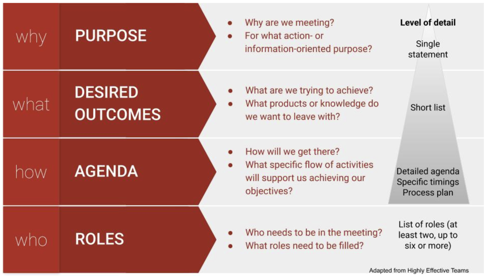
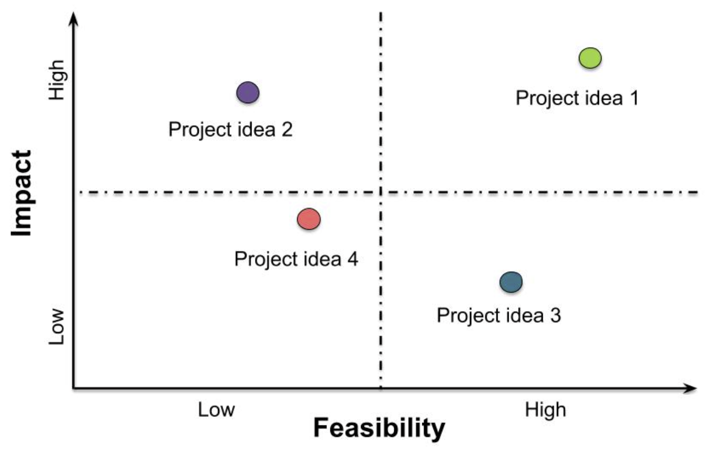
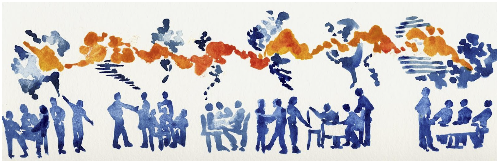

Data Inventories & Effective Meetings
[Overview Under Construction]
Check back later
Data Inventory Value
Documenting potential datasets (and their metadata) thoroughly in a data inventory provides numerous benefits! These include:
- Well-documented data inventory table make it easier for researchers to find and access specific data for reproducible research
- Documentation will help researchers to quickly understand the context, scope, and limitations of the data, reducing the time spent on preliminary data assessment
- Detailed documentation will speed up the data publication process (e.g., data provenance, the difference among methods, etc.)
Process Design
Good meeting design starts with understanding your purpose and objectives, as well as your participants. Once you understand why you need to meet (your overarching goal) and what you want to accomplish (the specific outcomes you are driving toward), you can turn to how you will accomplish your purpose (i.e. the agenda of activities, timings, and tech) and who will play what roles. You want participants to know their role and how to be at their best.
A good rule of thumb is to allow 2-3x as much time to plan a meeting as its duration.

Online Meetings
Online meetings benefit from all the same considerations as in person meetings, plus a little extra care and planning. Keeping your team engaged is doubly challenging in a virtual setting: our computers are full of distractions (email! notifications! internet rabbit holes!) AND as the facilitator, it’s harder to tell whether participants are engaged when all you have to go on is a small video window. Managing people’s energy and attention and creating opportunities for real human connection are real challenges. On the flip side, online meetings allow distributed teams to stay connected and can provide a dynamic and rich platform for shared work.
In addition to the general tips above, in online settings:
- Be thoughtful and equitable when scheduling across time zones
- Develop online meeting norms for your team and enforce them (e.g., use of chat, indicating you want to speak)
- Ask a team member to help you monitor the chat and assist participants with tech or connectivity challenges
- Encourage personal connection (e.g., with check ins, invitations to have video on)
- Check engagement regularly
- Provide breaks (bio breaks, silence, invitations to step away from the screen for reflection)
- Make video optional
- Take advantage of tech tools (breakout rooms, polls, shared notes, virtual whiteboards, recording, transcription, etc.)
Meeting Roles
It’s very difficult to both facilitate a conversation and engage fully in it as a participant. If you add taking notes on top of that, it’s sure to become overwhelming. So recruit some help. The number of roles you need to fill will depend on the size of the group and the complexity of the process. Online meetings particularly benefit from a team approach to facilitation. Share and rotate duties over time:
- Process facilitator - sets tone and pace, mediates conflicts, and ensures all voices are being heard, interpersonal dynamics are positive/effective, and group is staying on task
- Meeting chair (optional) - keeps an eye on the overall vision and progress of the meeting
- Timekeeper - may also be the chair or facilitator
- Tech Host - monitors chat, sets up breakout rooms, records meeting, troubleshoots technology as needed in virtual/hybrid meetings
- Notetaker - captures action items and notes, often in a google doc that can be viewed and added to by others; may also produce a meeting summary
- Scribe - captures important points that can be seen in real time by the whole group, usually on a whiteboard or flipchart
- Spotter - keeps a running list of who is waiting to speak (especially in large groups or intense discussions)
- Relationship monitor - tracks group dynamics and actively works to help everyone feel included and engaged on personal and social levels, may also be the facilitator
- Participation monitor - engineers opportunities for participation, quells interrupters, amplifies and credits the messages of quieter participants, may also be the facilitator
As you get to know your team members, you can start to match people to these different roles based on their skills and recruit them to help.
Alternatives to Conventional Meeting Structures
Differences in thinking and learning styles, disciplinary background, power, and other dimensions of diversity mean that there’s no such thing as a one-size-fits-all approach for participatory processes. Nonetheless, we tend to default to a small set of traditional ways of sharing information and engaging people when we meet. These conventional structures are often either too limiting (presentations, status reports, and managed discussions) or too free-form and disorganized (open discussions and brainstorms) to effectively tap the wisdom of the group (Lipmanowicz and McCandless, 2014). To support the engagement of all participants, we need to break out of those traditional ways of meeting.
Books and websites like Liberating Structures, Gamestorming, and the Facilitator’s Guide to Participatory Decision Making offer dozens of alternative group processes (see Resources). Known as microstructures or knowledge games, these simple, fun activities are designed to include everyone, distribute control, and unleash creativity. One or more activities can be matched to your intended outcomes and arranged in a sequence to advance the team toward your overall goal. Liberating Structures offers a matching matrix to help you identify microstructures that could fit your needs and an app you can use to browse and assemble strings of activities. Gamestorming organizes their activities into categories (e.g. games for opening, games for decision-making) for exploration.
Microstructures for Small Group Meetings
Here are a few microstructures that work well for small group virtual meetings. They also work for larger groups and in person settings:
| Microstructure | Thinking Preference | Purpose | How It Works |
|---|---|---|---|
| Icebreaker / check in | Relational | Connect as a team, start on a positive, human note | Many versions exist, e.g., one word to describe how you are arriving; one thing you are feeling grateful for today; coolest thing you’ve learned lately; describe where you grew up without using any place names, etc. |
| Round robin / go around | Analytical, Relational | Hear from everyone | Everyone answers the same prompt. Alternatives to going in order: each speaker calls on the next person after they have shared - keeping track of who has / hasn’t spoken keeps people paying attention; popcorn-style - people share in the order that they feel moved to speak |
| 1,2,4,all | Analytical, Practical, Experimental, Relational | Engage everyone in generating questions, ideas, and suggestions | Individual reflection; Pair share; Two pairs combine and share as a group of 4; Small groups share highlights with whole group |
| Min specs | Experimental | Specify simple rules the group must follow to achieve your purpose | 1,2,4,all format; Individuals brainstorm things the group must do or must not do to achieve its purpose; Share in pairs or small groups; Pare the list down to the minimum set of rules you could follow and still achieve the purpose |
| Affinity Map | Analytical, Relational | Surface ideas, detect patterns, and analyze | Brainstorm ideas using sticky notes on a wall or virtual whiteboard; Cluster into categories; If useful, prioritize within categories |
| Brainwriting | Analytical, Practical, Experimental, Relational | Surface and elaborate ideas | (1) Brainstorm ideas in a google doc or virtual whiteboard (or on index cards in person); (2) Read and add to each other’s ideas; (3) Discuss |
| What, So What, Now What | Analytical, Practical, Experimental | Make sense of past progress or experiences and decide on future actions | What - As a group, compile the facts and observations relevant to the context; So What - Reflect on the facts and their implications, identify patterns, generate hypotheses; Now What - Draw conclusions - What actions make sense? |
| Fist to Five / Gradient of Agreement | Practical, Relational | Assess degree of consensus; seek closure | Use when ready to close a discussion or make a decision; Invite participants to rate their level of agreement with a proposal on a scale of 0-5; Five fingers means “absolute, total agreement or support” and a fist means “complete opposition” |
| Polling | Analytical, Practical | Rank alternatives | Before you start - clarify how you will use the results - are you gathering information or taking a vote to make a decision?; Decide how many votes per person; In person - use sticky dots; Virtually - use +1s in a google doc or a digital polling tool (e.g., Zoom, Mural, slido) |
| Feasibility-Impact Matrix (see figure below) | Analytical, Practical, Experimental | Compare alternatives | Discuss and agree on definitions for two criteria for evaluating ideas: feasibility of implementation and impact potential; Rate each idea against these two axes and map onto 2x2 grid |

Harvesting Meeting Content
As you go, and definitely before your meeting is over, engage your team in synthesizing and capturing the information that has been discussed. This helps you to deepen understanding, document your workflow and decisions, and pick up easily next time. Use a consistent system - like a running notes document linked in the calendar item. Graphics or drawings can be a valuable complement to oral and written content in making thinking visible.

Consider using:
- Grids to organize information
- Conceptual models or mind maps to articulate shared understanding of complex systems
- Manifestos, abstracts, and other written collateral to distill ideas
When capturing notes, try to use people’s own words; if necessary ask them to distill long or complex points into a headline you can capture. Invite them to offer corrections if the notetaker didn’t capture what they meant.